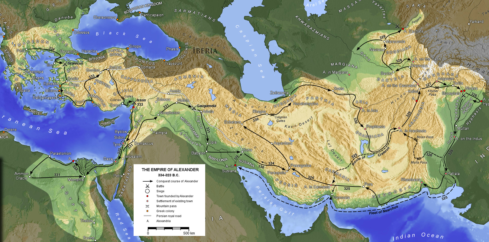
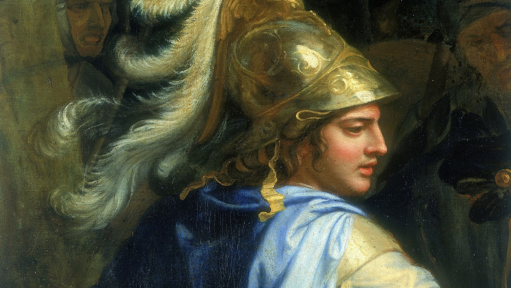

The issue is the jews lived within the Greek empire and they saw the Greeks taking over the world and expansion of Alexander the Great's Empire. They were exposed to the growth of the empire and could observe how empires are run for a very long time.
The situation is the same with the Romans who had them, albeit the hatred for the larger population, somehow always latched on their back for the whole time of existence of both of the Greek and the Roman empire. By the time the Romans understood the existential corrosion it was already too late as they couldn't suppress the jews militarily or otherwise.
The mainstream history just states this was done for whatever reason but the outcome of the effects of actions do show that Alexander wanted to re-aryanize the places where there was prior an Aryan Pagan culture but just create an empire based on the Pagan re-awakening. By Alexanders time the spiritual downfall was already evident people were just swimming more and more in gross lack of spirituality.
Also many White or otherwise Greek racially people were scattered in all the areas where the Greeks dominated and this is why Alexander the Great got a "Barbarian" wife whose name was Roxanne. Through Roxanne also and the noble family Alexander tried to expand into the Hindu region in order to manifest the first objective of the empire which was the restoration of the Vedic culture. But he died before any of this even manifested properly.

It's to be stated however all non Pagan expressions of faith such as Judaism were punishable by death. And the jews of the time therefore attempted to merge in with the "Hellenized" thought to avoid execution. This death would not only come from the government but the normal people as well. The Greek empire allowed ALL other Pagan faiths, and anything Pagan, but it only had a beef with jews.
The Roman future of how the jews sacrificed babies, promoted spiritual hoaxes, overthrown and perverted Rome, and did spiritual crimes, just plainly shows why this was the case.
The jews had to live under two systems of rulers one was the Greeks and the other was the Romans who were based on the Greeks. And the Greeks created the first modern Vedic empire after a very long time of nothing existing of this kind. Later this empire also merged with Egypt and lasted hundreds and hundreds of years.
This was instated by Alexander whose teacher was Aristotle, and Aristotle was called a Sage as how the Hindus call their own Rishis. All the Greek philosophers of the era also were aware of the eastern connection, the origins of the east, and the ancient pre-homeric Vedic culture. Even Homer was considered part of this Vedic culture.
Aristotle's second existence was not that of the empirical scientist but the occult mastermind. There are descriptions where Aristotle taught Alexander how to do binding rituals and how to summon the Gods and many other things. The whole story has been physicalized as some sort of dumb conquest of the world for whatever things.
The Greeks of the time were rich and just fine they didn't require to enter lands that were utterly pointless in resources, in 'barbarians' and many other things. But it was known that since the ancient times there were leftovers of White populations in the middle-east. Just hovering there as barbarians while racially they were Aryans. Artemisia for whom a movie was made in the 300 sequel was a woman top military commander of the Persian empire who was Greek in blood.
However with the Greeks something happened the Greeks did not just sit idly with the spiritual knowledge to get stoned, they utilized this knowledge and created one of the world's most significant civilizations. Like the Egyptians did. And the jews were observing this from the closeby and were a 5th column in what was the Greek empire of the time. At the time of the Greeks and the Egyptians the sages only wanted to return the world to a "Vedic" type of civilization which existed in the Golden age.
The jews had hijacked later Platonism which was the root teachings of the spiritual side of the Greek empire and the higher occult mystery schools. They could never get into the inner core of these such as the Orphics or the Delphics but they could pseudo-philosophize as they do today. They also acted as a racial 5th column inside the Greek empire as they were jews in blood but they were raised in Greek literacy under the Greek empire. They were called the Exile or the Diaspora as far as the jews as concerned.
The jew who burned the library of Alexandria or Philo Judaueus was one of these dispora racial jews who had Greek education. The greatest crime against the Greeks and the whole of the Pagan civilization back then was the torching of all the inherited knowledge of mankind until this point in the Alexandrian Library. Thousands upon thousands of labors, toils, researching, and knowledge about the history of mankind was simply torched. Today the jews cannot torch the libraries of mankind but they have won the information war simply by desecrating anything meaningful and corrupting it. And censoring information.
This to be understood is context is how the jews today in America pretend to be American, try to decide for America, and are claiming they are American, while all they do is simply take America down the multicultural, unholy drain. This is the same behavior the jews always engaged when being under any empire. Today modern jews say the jews are in exile under Esau in America, as Esau is one code name for Whites they use in their context. And that Esau needs to be destroyed. The jews also call America the second Rome, and parellel it with Ancient Greek empire and it's abuse towards jews. Because as anyone can see the jews have a very hard life in the US, occupying the best provisions in everything, and living in Beverly Hills for example.
So like we have "American Jews" today, who are racially and in conscience jews, but in passport and nationality "American", we have had thousands of years ago "Hellenistic" jews.
The Hellenistic Jews were basically racial jews who in order to escape execution from the Greek empire, pretended that Judaism was to some extent "Hellenized" in order to save themselves from execution. Just covering up for the facts of what they really were working on.
The disapora's purpose was to steal knowledge from the native populations. And corrupt it's native knowledge. While delivering the stolen information in the hands of the jewish Rabbinate. This amassing of information took tens of centuries until the jews could reach a level of understanding enough to use this knowledge to dominate the planet directly. And it makes sense this knowledge in the first place was used as a formative knowledge for prior empires.
The Gematria of the jews is simply what is called Geometria or Geometry of the Platonists or Pythagoreans this is simply the study of numbers, shapes, and their natural connotations. The jews just ripped off this system and they created the Gematria.
The Kabbalah is based on the concept of Kavana which in Greek means "The Bell". The "Bell" is just the symbol of the living vibration of words. The Ain Soph of the jews means "Mia Sophia" which means "The one Wisdom". This is the name of the so called universal creator. The Ein Soph is also an anagram from the Greek Ena Phos which means the Singular Light which the Egyptians also described as the power of Ra. Which was the basis of the Solar Religion.
The Jews also name the "Chakras" the "Sephirot" which is just a ripoff of the Greek Zephyro which is "Jewel". In the east all the chakras are described as jewels. Zephyro also comes from Zephyros which is the Greek God of the Vital wind, the Vayu of the East.
Nefesh is also stolen from the Greek Nefos which means heavenly deity of the clouds. As Nefesh is used as a term to describe the sum of the vital winds inside the body. Even Christos which is pulled from the backdoor in the Kabbalah, Christos just means "The One Initiated In the Mysteries" and absolutely nothing else. It's an epithet.
The "Adam" of the jews comes of the Greek Adamas which means "rare jewel" or "supremely rare stone", or in literal translation, the Diamond. The "Body of Adam" or "Adam Kadmon" is the Diamond body of the East, another corrupted statement.
Adam Kadmon is also ripped off from the Greek Mythical King Kadmus, King of Thebes, who was born from the mouth of the Serpent as is the common myth of the Thebean Greek people. Kadmus fought the dragon/serpent and when he won he was born from his mouth. Kadmus is also coming from Kekadme which means "To Shine Brightly" in Greek, and Keka comes from that which is resulted from burning as in Kekamena, or the Cleansing by Fire process. Which results to Kadmus the fire body.
The tale also says according to Herodotus Kadmus came from the Phoenician lands but this is a racial matter not an alphabetical debate as it appears the Greek Alphabet existed before the Phoenician Alphabet, as the first correlations measurable correlations are seen in 1000 Bc while Herodotus based on his time says that Kadmus settled in Greece 1600 years earlier. So the whole meme that Greek was from Phoenician simply cannot stand, as there is a 1000 years gap, with Herodotus living at around 500 bc and saying that Kadmus was the Greek king 2000 years ago, but the first correlations between "Phoenician" and "Greek" appearing in 1050 Bc.
Making the "everything started from Phoenicians" as far as the theory is concerned more than likely wrong. In anyway the Phoenicians were probably just Indo-European whites anyway as this was a term used by the Greeks for the people living in the region of Tyre, or whom the jews call Canaaites, and where, aside the Greeks, one of the races that are destined for extermination in the Bible. Its clear the Jews didn't just peacefully co-exist nor with Greeks nor with the Phoenicians and wanted them dead. Because apparently both the Phoenicians and the Greeks simply had enough of the kikes and opposed them and wanted them gone.
They constantly were programmed by all these people and they ripped off knowledge from them forcefully, to the point the native populations always chased them around to murder them.
Adam - Kadmon forms Adam-Admon which is close to Adamantinos which means Adamantinum and is the strongest essence that can be found in nature. Adamantine in Mythology was the most incorruptible element in existence, showing full indestructibility. Kadmus in Greek Mythology came from the Serpent/Dragons Teeth. Today we know Adamantine is part of our teeth. This is because the Dragon resides on the Holy Bone or the Tailbone which is also to imply the indestructible quality of rebirth. The bone itself looks like a giant tooth.
Angel which the jews use is also another stolen statement, it is another epithet meaning simply and without any other connotation, messenger. Hermes was the Angelos of Zeus since he moved Zeus's decrees. The jews call their angels "Cheruvim" which possibly relates to Heru which is stolen from Chi-Ra, and Hera literally means "The Hand". Hera is also the name of Zeus's wife showing what this is about. As such we have the concept of the "Hand of God" or the "Angels who act in his behalf". After centuries the Christards said that "Mother Mary Was Cherubim", to show how much corruption a statement like that can get unto itself. Mother Hera became Mother Mary, and Hera became the "Cherubim".
The Klippoth of Kabbalah which means just "Husks" comes from the Greek word "Kelyphos" which means the covering or the shroud, or the exoskeleton, carapace. Literally Keliphos which in female is Kelipha means "Light Imprisonment". The jews state they try to remove the "Kelipha From the Sephirot" which should be clear by now what they mean. As a derogatory statement, they call the Pagan Gods (from which all of this is stolen from...add insult to injury...) Klippoth.
To show that our Gods are the greatest existential problem of jews and do not allow them to even liveor thrive. Everything negative the jews experience they say it's the Klipot doing it, which has two meanings, one is our Gods, and the second is the stolen meaning of problems with the soul light. Apparently what makes us Gentile shine simply makes the jews dim out and die.
The jews also in Kabbalah to show reduction they add the Greek prefix KAT in front of their words. Like Katnut which is the concept of reduction in their Kabbalistic writings.
Keter or Crown simply means K-Ether which is actually the Greek Ethere or Ether or Aether. K is from Korona which means Crown. This is the symbolic of the Crown chakra on the top of the head. Korach in the Kabbalah simply means.
Metatron which the jews call their top angel is simply a fully ripped of concept of the Meta-Thronos which means the one beyond the Throne and is symbolic of the Crown Chakra as well.
Neshama which is the name of the should comes from Anasema which means "The Breath" or the power to breathe. This again goes to the Hindu Vayu and the concept of the breath.
Adonai is ripped off from Adonis which was the love of Aphrodite.
The whole of the jewish alphabet is just also a ripoff of a couple of languages such as the Egyptian "Yoth" which they later turned into Yod, and many other examples. As far as Greek is concerned many of these letters are just ripped off from Greek alphabet as well.
Alpha into Alef, Beta into Bet, Gamma into Gimel and so forth. Similarly the jews have acted in other examples such as mistranslated the names of the Gods so in their language they mean different things such as Astarte to Astoreth which means excrement in hebrew.
The name itself of the whole stolen culture as "Kabbalah" can probably be traced down to the word Kymbala which are just instruments of music that produce vibration. The drums are used as symbolism to show vibration and Kabbalah is based as a concept of the creation through the speech and vibration fields. This is also an Egyptian word stolen verbatim anyway.
The Rabbis are divided in two aspects here. Those that do admit that it's all stolen from the 'exiles' and that it's knowledge accumulated from Gentiles the so called "Kabbalah", and jewdized to the core. And those that are against mentioning this too openly who scorn the big rabbis who even admitted this such as Maimonedes. The jews are aware of their theft and ultimate perversion and they rejoice it either way.
The fact the Kabbala is an Ancient Greek system of ascent based on Egyptian and Vedic principles should be clear. Since all the Ancient Greek sages were in reality, at least the important ones, studied in Egypt, while some also went into the Far East. Same as all those who provided the system to raise spiritually in the cryptic schools like Pythagoras who was directly an Egyptian student and also into the Greek mysteries at the same time.
Iamvlichus from whom we have surviving texts about Pythagoras just highlights that in the mind of those in the know the Greek mysteries and the Ancient Egyptian ones were just the same. And it was all traced back to the Far East the first Golden Age Civilization. As such they also moved towards the east, the later 'conquerors' such as Alexander.
However even in the time of Pythagoras when he tried to bring the mysteries back to Greece he had found that the general spiritual condition of people was already steeping too low and a people alienated to what a few centuries earlier was it's actual culture.
-High Priest Hooded Cobra 666
